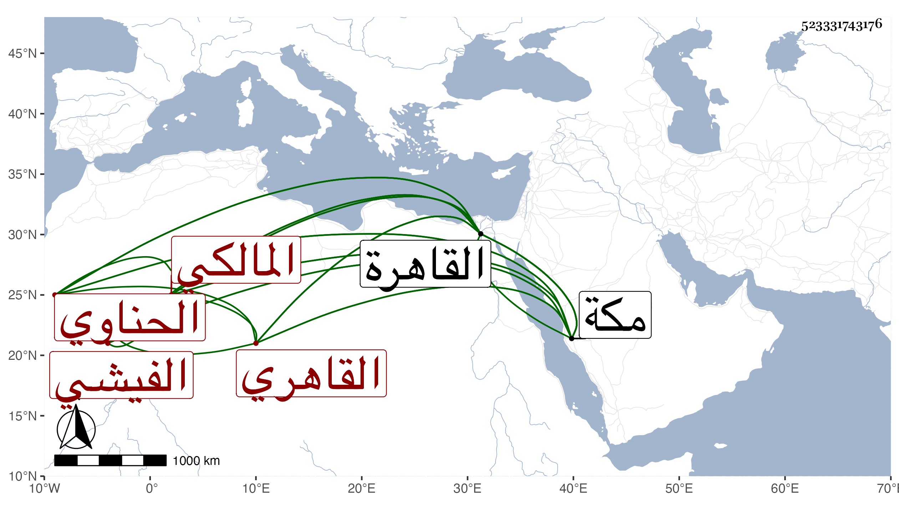

0902Sakhawi.DawLamic.ITO20230111-ara1.EIS1600.523331743176
Biography ID: 523331743176
1069
علي بن محمد بن علي بن محمد بن إبراهيم نور الدين أبو الحسن الفيشي الحناوي القاهري المالكي نزيل مكة وعين الموثقين بها ويعرف كسلفه بالحناوي وهو قريب شيخنا الشهاب الشهير ووالد الرضى محمد . نشأ بالقاهرة متكسبا بالشهادة فلم ينجح فيها وسافر إلى مكة قبيل السبعين فداوم التكسب بها وسمع علي في التي بعدها الشفا وغيره وحسنت معيشته هناك فقدم القاهرة فنزل عما كان معه وضم تعلقه وعاد سريعا فاستوطنها وتميز بالشهادة ولا زال ترق فيها بحيث انفرد وخص بالوصايا ونحوها فأثرى وذكر بالمال الجزيل وعمر دارا هائلة وصار يقرض ويعامل كل ذلك لمزيد إقبال البرهان عليه لعقله وسكونه ومداراته وتنبته بالنسبة لمن لعله في الفضل أميز منه ، ولما عرض ولده علي كتبت له ألفاظا أودعت بعضها التاريخ الكبير لكن سميت جده هناك أحمد وأظن الصواب ما هنا وقد قدم القاهرة مطلوبا في أثناء سنة خمس وتسعين لإنهاء صهر عنه أموالا جمة وأحوالا تقتضي شينه وذمه فضيق عليه بالترسيم وغيره ووضع للضرب غير مرة للتشديد في أمره ويقال أنه انفصل عن عشرة آلاف دينار فلما توجه استخلص من معاملاته الشهير أمرها خمسة آلاف دينار وتقاعد عن الباقي فجيء به مع الركب فضيق عليه ثم أودع المقشرة بالخشب ودام إلى أن أطلق ورجع فتراجع وما وتدافع .
